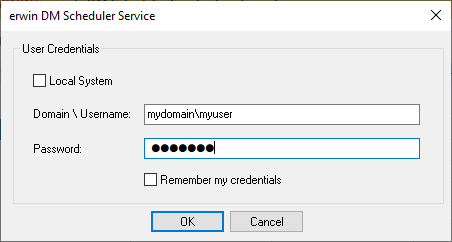

You can save a reverse engineered model at a predefined location in your mart. However, to save a model to a mart, you need to be connected to it.
Connecting to Mart On Cloud (With SSO user) using API is restricted.
For more information on saving a reverse engineered model to a predefined location on the mart, refer to the Setting Reverse Engineering Options topic.
Ensure that you have configured and initialized erwin Mart Server.
To connect to a mart, follow these steps:
The Connect to Mart screen appears.
Defines the name of the web server where you have installed the Mart.
Specifies the port number to access the web server.
Default: 18170
Specifies that you want to use the IIS web server to connect to Mart. This check box is enabled only if you have configured IIS. For more information about configuring IIS, see the Implementation Guide (Workgroup Edition).
If you use IIS, open server.xml file available at C:\Program Files\erwin\Mart Server r9\Tomcat64\conf and un-comment <Connector port="8009" protocol="AJP/1.3" allowedRequestAttributesPattern=".*" redirectPort="8443" secretRequired="false"/>.
Specify the IIS port number that you want to use. This field is enabled only if you select the Use IIS check box. The default is 80.
Specifies that you want to connect to the Mart through a secured connection. SSL lets you access the Mart through a secured connection. This check box is enabled only if you have configured SSL on your web server. For more information about configuring SSL, see the Implementation Guide (Workgroup Edition).
If you use IIS with SSL, open server_ssl.xml file, which is available at C:\Program Files\erwin\Mart Server r9\Tomcat64\conf and un-comment Connector port="8009" protocol="AJP/1.3" allowedRequestAttributesPattern=".*" redirectPort="8443" secretRequired="false"/>.
Defines the application name of the Mart that you want to connect to.
Default: MartServer
Specifies the type of authentication you want to use. You can use a user name that is authenticated by the Mart Server application.
If you are a non-administrator user, to be able to use Windows Authentication, ensure that you clear the Local System check box. Then, use your Windows <<Domain\Username>> and password to start the erwin DM Scheduler Service.
Defines the name of the user that has access to the Mart. If you are using a Windows-authenticated user name, enter it in the <domain name>/<user name> format.
A local Windows user who does not belong to a domain or who is not part of an Active Directory cannot log in to the Mart as a Windows user.
Defines the password of the user.
Contains at least 1 lowercase character
Contains at least 1 uppercase character
Contains at least 1 number
Is minimum 6 characters in length
Is maximum 130 characters in length
If you have selected Use SSL and the security certificate is installed, you are connected to the Mart.
After you connect to the Mart, if you click Connect to Model Manager again, a dialog opens seeking your permission to disconnect from the Mart.
If your security certificate is not installed, a message, The certificate authority is invalid or incorrect, appears. You must install the security certificate to proceed.
The SSL Certificate Install dialog opens.
The Certificate dialog opens.
The Certificate Import Wizard dialog opens.
The security certificate is installed and you are connected to the Mart.